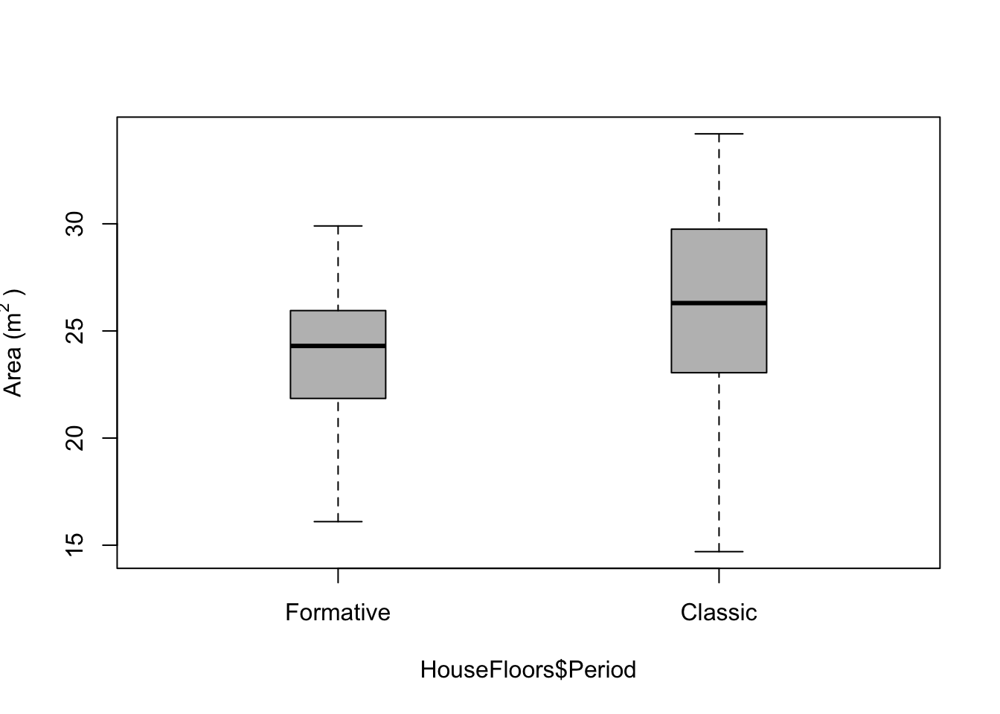
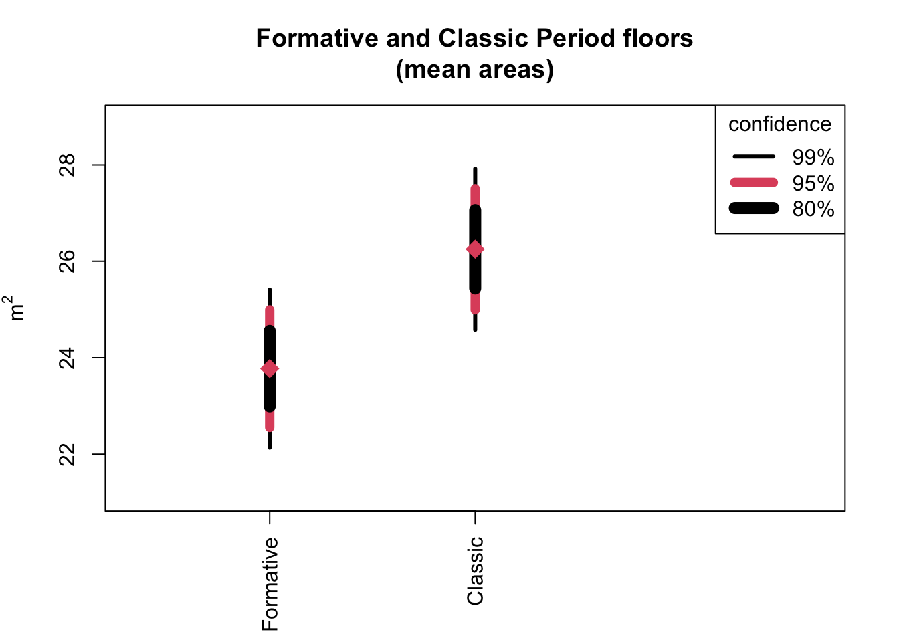
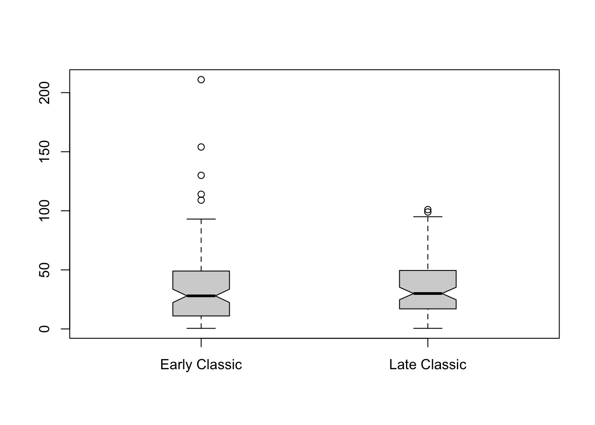

12 Comparing Two Sample Means (Ch. 12)
We’ve hinted a bit at the problem of comparing samples, which is a very common sort of question to ask.
12.1 Confidence, Significance, and Strength
Data for Formative and Classic Period house floor areas (in \(\textrm{m}^2\)), as Drennan uses in Fig 12.1:
Formative <- data.frame(Area = c(29.9, 29.6, 28.7, 27.7, 27.5, 26.5, 26.5, 26.3, 25.6, 25.6,
25.4, 24.9, 24.8, 24.5, 24.5, 24.3, 24.3, 23.4, 23.3, 23.3,
22.9, 22.3, 22.1, 21.9, 21.8, 21.5, 20.7, 20.2, 19.4, 18.3,
17.0, 16.1))
Classic <- data.frame(Area = c(34.1, 34.2, 33.1, 32.8, 32.4, 32.3, 31.7, 31.5, 31.2, 30.4,
30.3, 30.0, 29.9, 29.6, 29.6, 29.3, 28.9, 28.3, 28.3, 28.0,
27.9, 27.3, 27.1, 26.5, 26.3, 26.3, 26.3, 25.9, 25.8, 25.8,
25.8, 25.2, 24.5, 24.4, 24.0, 24.0, 23.7, 23.4, 23.3, 22.8,
22.7, 22.6, 22.3, 21.7, 21.2, 21.7, 20.4, 19.7, 19.4, 18.9,
17.5, 14.7))
HouseFloors <- data.frame(rbind(cbind(Period = "Formative", Area = Formative),
cbind(Period = "Classic", Area = Classic)))
#convert to factor and order levels
HouseFloors$Period <- factor(HouseFloors$Period, levels = c("Formative", "Classic"))Then we can build Fig 12.1 (though we’ll have to make our own function to make a bullet plot).
Stem-and-leaf plots of each dataset, and back-to-back:
##
## The decimal point is at the |
##
## 16 | 10
## 18 | 34
## 20 | 27589
## 22 | 139334
## 24 | 335589466
## 26 | 35557
## 28 | 769##
## The decimal point is at the |
##
## 14 | 7
## 16 | 5
## 18 | 947
## 20 | 4277
## 22 | 3678347
## 24 | 004528889
## 26 | 3335139
## 28 | 03393669
## 30 | 034257
## 32 | 3481
## 34 | 12## ______________________________________
## 1 | 2: represents 12, leaf unit: 1
## Formative$Area Classic$Area
## ______________________________________
## | 1* |
## | t |
## | f |4 1
## 2 76| s |7 2
## 4 98| 1. |899 5
## 9 11100| 2* |0111 9
## 15 333222| t |2222333 16
## (9) 555444444| f |444455555 25
## 8 77666| s |6666777 (7)
## 3 998| 2. |88889999 20
## | 3* |000111 12
## | t |2223 6
## | f |44 2
## | s |
## | 3. |
## | 4* |
## ______________________________________
## n: 32 52
## ______________________________________And then boxplot by Period:
boxplot(HouseFloors$Area ~ HouseFloors$Period, boxwex = .25, col = "grey",
ylab = expression("Area (m"^{2}~")"))
The bullet plot on the right of Fig 12.1 is not implemented in R, but we can build a function that makes one (courtesy of Ian Robertson). A bullet plot simply plots multiple confidence intervals in the same space.
#bullet plots (as implemented by IGR)
FormFloors <- HouseFloors$Area[HouseFloors$Period == "Formative"]
ClassFloors <- HouseFloors$Area[HouseFloors$Period == "Classic"]
#build function to calculate multiple confidence intervals (defaults to .99, .95, and .8)
#START FUNCTION************************************
ciDat <- function(x, ci = c(.99, .95, .80)){
#return boundaries for requested CIs
meanX <- mean(x)
sdX <- sd(x)
nX <- length(x)
seX <- sdX/sqrt(nX) #standard error
t <- qt((ci+1)/2, df=nX-1)
low <- meanX - (seX*t) #lower boundaries
high <- meanX + (seX*t) #upper boundaries
return(rbind(high, low))
}
#END FUNCTION************************************
bpF <- ciDat(FormFloors); bpF #assign to object and display, in a single line## [,1] [,2] [,3]
## high 25.41542 24.99425 24.55781
## low 22.13458 22.55575 22.99219Having used the ciDat() function to derive confidence intervals, we can use those to make a bullet plot.
COL <- c(1, 2, 1) #set up colors
LWD <- c(3, 7, 9) #line widths
AT <- c(2, 3.5) #locations
plot(1:3, ylim = range(c(bpF, bpC)) + c(-1,1), xlim = c(1, 6), xaxt = "n",
ylab = expression("m"^2), xlab = "", main = "Formative and Classic Period floors\n(mean areas)")
segments(AT[1], bpF[1, ], y1 = bpF[2, ], lwd = LWD, col = COL)
segments(AT[2], bpC[1, ], y1 = bpC[2, ], lwd = LWD, col = COL)
points(AT, tapply(HouseFloors$Area, HouseFloors$Period, FUN = mean), pch = 18, cex = 2, col = 2)
axis(1, at = AT, labels = c("Formative", "Classic"), las = 3)
legend("topright", legend = c("99%", "95%", "80%"), lwd = LWD, col = COL, title = "confidence")
We can plot the box and bullet plots side-by-side, as in Fig 12.1, by using par() settings. Adding the console output (the ascii text that stem.leaf.backback() produces) to a plot turns out to be a tremendous pain the butt, so we will leave that out.
par(mfrow = c(1,2)) #make two columns
boxplot(HouseFloors$Area ~ HouseFloors$Period, boxwex = .25, col = "grey",
ylab = expression("Area (m"^{2}~")"), ylim = c(14,35))
plot(1:3, ylim = range(c(bpF, bpC)) + c(-1,1), xlim = c(1, 6), xaxt = "n",
ylab = expression("m"^2), xlab = "", main = "")
segments(AT[1], bpF[1, ], y1 = bpF[2, ], lwd = LWD, col = COL)
segments(AT[2], bpC[1, ], y1 = bpC[2, ], lwd = LWD, col = COL)
points(AT, tapply(HouseFloors$Area, HouseFloors$Period, FUN = mean), pch = 18, cex = 2, col = 2)
axis(1, at = AT, labels = c("Formative", "Classic"), las = 3)
legend("topright", legend = c("99%", "95%", "80%"), lwd = LWD, col = COL, title = "confidence",
cex = .7)
If you’re desperate to add a stem-and-leaf plot to your graphics, you can start here:
plot.new()
stemoutput <- capture.output(stem.leaf.backback(Formative$Area, Classic$Area))
text(0,1, paste(stemoutput, collapse = '\n'), adj = c(0,1), family = 'mono' )To generate Table 12.1 we can look at summary statistics of the two batches of house floor measurements.
summarystats <- function (x) {
return( c(
length(x), median(x), mean(x), IQR(x), sd(x), sd(x)/sqrt(length(x))
))
}
round(summarystats(Formative$Area),1)## [1] 32.0 24.3 23.8 3.9 3.4 0.6table12.2 <- cbind(round(summarystats(Formative$Area), 1),
round(summarystats(Classic$Area), 1))
row.names(table12.2) <- c("n", "Md", "Xbar", "IQR", "s", "SE")
table12.2## [,1] [,2]
## n 32.0 52.0
## Md 24.3 26.3
## Xbar 23.8 26.2
## IQR 3.9 6.5
## s 3.4 4.5
## SE 0.6 0.6If you were inclined to look at mean areas with confidence intervals for different confidence levels in table form (as in Table 12.2) rather than as a bullet plot, you could hijack our ciDat() function.
ciDat2 <- function(x, ci = c(.99, .95, .80)){
#return boundaries for requested CIs
meanX <- mean(x)
sdX <- sd(x)
nX <- length(x)
seX <- sdX/sqrt(nX) #standard error
t <- qt((ci+1)/2, df = nX-1)
ci_table <- cbind(ci, round(meanX,1), round(seX*t,1))
colnames(ci_table) <- c("ConfLev","Mean","Err")
return(ci_table[3:1,])
}
ciDat2(FormFloors)## ConfLev Mean Err
## [1,] 0.80 23.8 0.8
## [2,] 0.95 23.8 1.2
## [3,] 0.99 23.8 1.6## ConfLev Mean Err
## [1,] 0.80 26.2 0.8
## [2,] 0.95 26.2 1.3
## [3,] 0.99 26.2 1.712.2 Comparison by t Test
Conducting a t test in R is easily done with the t.test() function. It’s important to go through some preliminaries to understand what conditions your data must satisfy for a t test to work, what you’re doing when you conduct a t test, and what the results are telling you.
The logic is similar to that of estimating the population mean: we use the standard error as a unit of measurement, and the t distribution to figure out how many standard errors we should be thinking about.
Once we know the pooled standard error, we can calculate t, and use the t distribution to determine how (un)likely it is that, in a sample of size n, a difference of the size we’ve measured is to occur.
Making functions to calculate the pooled standard deviation, pooled standard error, and t statistic is not difficult (though they look messy).
#In the following functions:
# n1 = sample size of first sample
# n2 = sample size of second sample
# s1 = standard deviation of first sample
# s2 = standard deviation of second sample
# sdp = pooled standard deviation
# sep = pooled standard error
# X1 = mean of first sample
# X2 = mean of second sample
sd_pooled <- function(n1, n2, s1, s2) {sqrt((((n1-1)*s1^2)+((n2-1)*s2^2)) / (n1 + n2 -2))}
SE_pooled <- function(n1, n2, sdp) {sdp * (sqrt( (1/n1) + (1/n2)))}
t <- function(X1, X2, sep) {(X1 - X2) / sep}Using these functions and following Drennan’s house floor example:
floorSD_pooled <- sd_pooled(n1 = length(FormFloors), n2 = length(ClassFloors),
s1 = sd(FormFloors), s2 = sd(ClassFloors))
floorSE_pooled <- SE_pooled(n1 = length(FormFloors), n2 = length(ClassFloors),
sdp = floorSD_pooled)
floorT <- t(X1 = mean(FormFloors), X2 = mean(ClassFloors), sep = floorSE_pooled)That t value, as Drennan explains (p154) can then be looked up in a table of t distributions. You can probably see ways to combine and streamline these functions, but in fact we don’t have to, as base R has a function (t.test()) that will do all this work for us (including the last step of looking up the t value).
A t test is performed slightly differently when the variances of the samples are not equal, so it’s a good idea to see whether they are comparable.
##
## F test to compare two variances
##
## data: FormFloors and ClassFloors
## F = 0.56251, num df = 31, denom df = 51, p-value = 0.08948
## alternative hypothesis: true ratio of variances is not equal to 1
## 95 percent confidence interval:
## 0.3038643 1.0952839
## sample estimates:
## ratio of variances
## 0.5625139Because the variances are not significantly different, we can use a pooled-variance t test, specifying that the variances are equal in the var.equal argument.
#using the separate vectors for floor areas that we've built:
t.test(FormFloors, ClassFloors, alternative = "two.sided", conf.level = 0.95,
var.equal=T)##
## Two Sample t-test
##
## data: FormFloors and ClassFloors
## t = -2.6742, df = 82, p-value = 0.009038
## alternative hypothesis: true difference in means is not equal to 0
## 95 percent confidence interval:
## -4.3161184 -0.6338816
## sample estimates:
## mean of x mean of y
## 23.775 26.250#or, using formula notation and the whole data frame:
t.test(Area ~ Period, data = HouseFloors, alternative = "two.sided",
conf.level = 0.95, var.equal = T)##
## Two Sample t-test
##
## data: Area by Period
## t = -2.6742, df = 82, p-value = 0.009038
## alternative hypothesis: true difference in means between group Formative and group Classic is not equal to 0
## 95 percent confidence interval:
## -4.3161184 -0.6338816
## sample estimates:
## mean in group Formative mean in group Classic
## 23.775 26.250It’s a good idea to pause at this point and digest the output of t.test(). The elements should all be pretty self-explanatory except for the ‘p-value’ and the ‘alternative hypothesis’, both of which Drennan covers further along in Ch.12. Note that the 95% confidence interval given is produced by multiplying the appropriate t value (for 95% confidence with a sample size of 83) by the pooled standard error. The negative signs mean that the first sample is smaller, and the interval given corresponds to how much smaller. In other words: we are 95% confident that the areas of Formative Period housefloors were between .6 and 4.3 \(\textrm{m}^2\) smaller than the areas of Classic Period housefloors.
If we wanted to instead use Drennan’s notation (2.5 \(\textrm{m}^2\) ± 1.9 \(\textrm{m}^2\)), we could calculate the difference between the intervals that t.test() returns and divide that by two (expecting some differences due to rounding).
In order to access just one part of what t.test() returns, we can look at ?t.test and check the ‘Value’ section, which tells us that the function will return a list containing several components.
floordiff <- t.test(Area ~ Period, data = HouseFloors, alternative = "two.sided",
conf.level = 0.95, var.equal = T)
floordiff$conf.int## [1] -4.3161184 -0.6338816
## attr(,"conf.level")
## [1] 0.9512.3 The One-Sample t Test
The t.test() function can also handle a single sample t test. In the example that Drennan uses, to examine the probability that a set of burials come from a population with an even sex ratio.
burials <-data.frame(sex=c(rep("female", 21), rep("male", 25)))
#t.test() needs numeric or logical (T/F) inputs, so we make a new column
burials$binary <- ifelse(burials$sex == "female", 1, 0)
#check ?ifelse - the arguments are (test, yes, no)
t.test(burials$binary, alternative = "two.sided", mu = .5, conf.level = 0.8, paired = F)##
## One Sample t-test
##
## data: burials$binary
## t = -0.58554, df = 45, p-value = 0.5611
## alternative hypothesis: true mean is not equal to 0.5
## 80 percent confidence interval:
## 0.3599443 0.5530992
## sample estimates:
## mean of x
## 0.4565217If you examine the results of this t test, you’ll see that the p-value = 0.56. While we shouldn’t fetishize that p-value, it does mean that it is >50% likely that the difference between the ratio we’ve observed (21:25) and our theoretical expectation of 50:50 is simply the result of sampling.
12.4 Assumptions and Robust Methods
The notched boxplots that Drennan discusses as a means of illustrating error ranges around the median, and illustrates in Fig. 12.2, are easy to produce using boxplot() and the data from Ch.10; we just have to specify the notch = T argument.
EClassic <- read.csv("data/Drennan_datasets/EClassic.csv")
LClassic <- read.csv("data/Drennan_datasets/LClassic.csv")
#example of data from Ch.10 (Fig.12.2)
boxplot(EClassic$Area, LClassic$Area, notch = T, names = c("Early Classic","Late Classic"),
boxwex = .25)
12.5 Practice
The dataset for the exercises is Zirconium.txt.